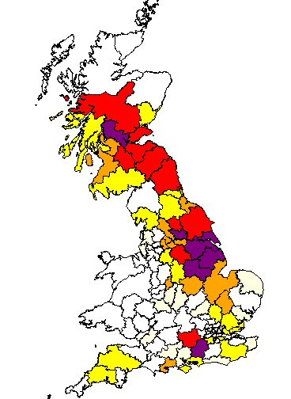
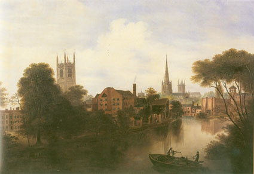

Marshall Surname Origin: Mare (horse) servant — possibly meaning a wide variety of related occupations including farrier, groom, and horse doctor. A name of office — master of the horse; anciently, one who had command of all persons not above princes. (Teut. Marschall; French, Mareschal.)
Our Marshall roots have so far been traced back to Joseph Marshall, who according to the census was born in Derby in 1796. Unfortunately we have been unable to trace his birth. Joseph married Hannah Wild at St Alkmund in Derby in 1816 and they appear with five of their six children in the 1841 Census for Abbey Barnes, St Werburgh, Derby.

In 1841 Joseph was described as a framework knitter but it was an industry undergoing hard times. By 1851 he was described as a glove maker and ten years later in 1861 a brewer. Hannah died between 1851 and 1861 and Joseph then lived with his son George and his wife Jane, before he himself died in 1867. At this time George is also described as a framework knitter.
George was the eldest son of Joseph and Hannah and married Jane Wainwright in 1844. They married at Derby Register Office. Jane was originally from Gloucester but by 1841 she and her widowed mother were living in Derby and both employed in dressmaking. George and Jane had eight children and sadly George died shortly after the birth of his eighth child in 1867. Jane married again in 1870 and she and the children adopted the surname of her new husband John Merry.
George and Jane's fifth child was Henrietta or Etty, born in Derby in 1857. By 1871, under the name Henrietta Merry, she was living with her mother and stepfather on Radfords Lane, Derby. She was 14 years of age and described as a silk winder.

By 1880 Etty was living in Sneinton in Nottingham. It is unclear whether or not she moved with her mother but by 1881 her mother was also living in Radford Nottingham. Etty married lacemaker and ex-soldier, Charles Marsh in St Matthias, Sneinton Nottingham in November 1880 and by 1881 they were living at Lake Yard, Nottingham.
Current Research : Researching the birth of Joseph Marshall in 1796.